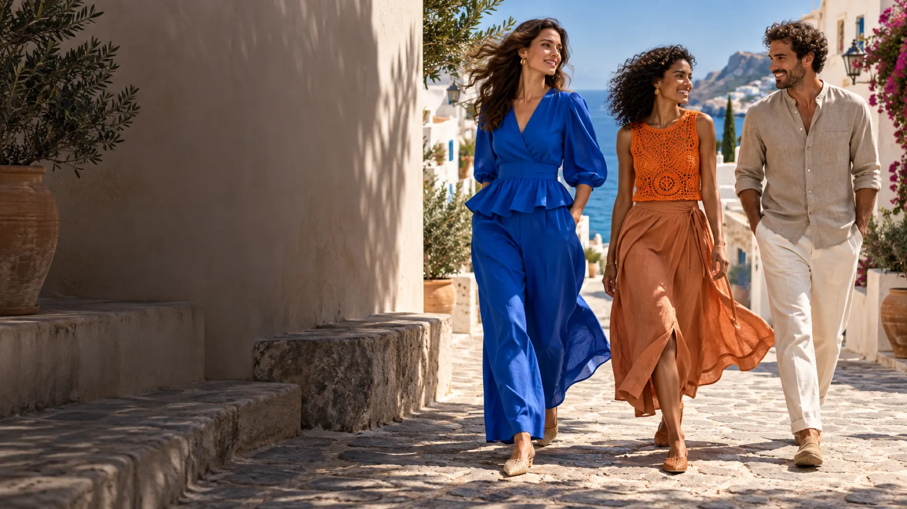
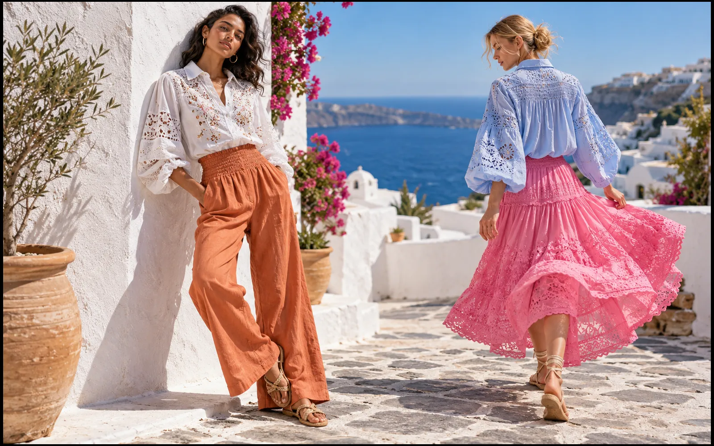
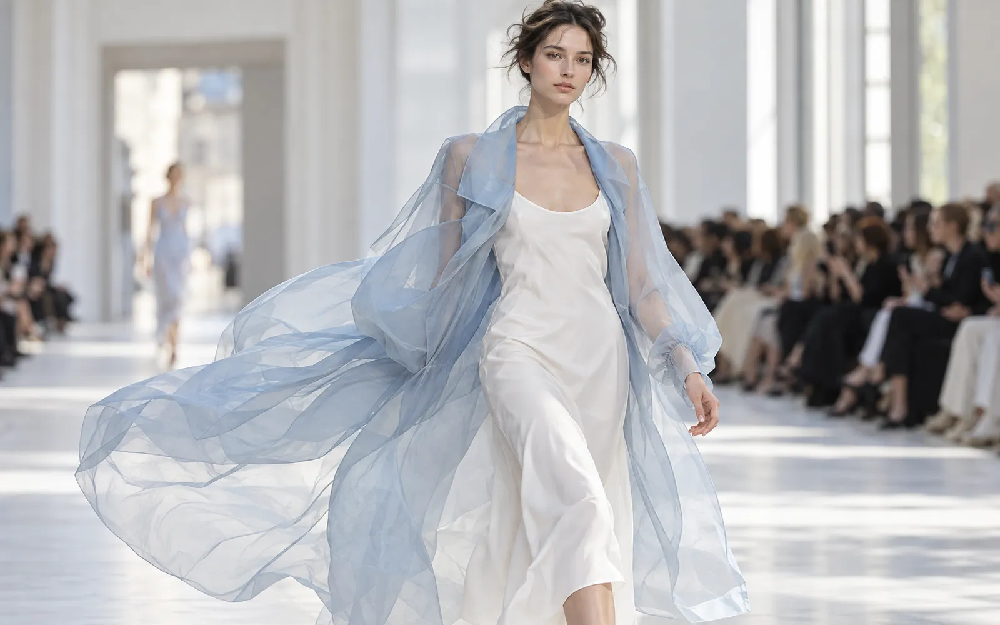
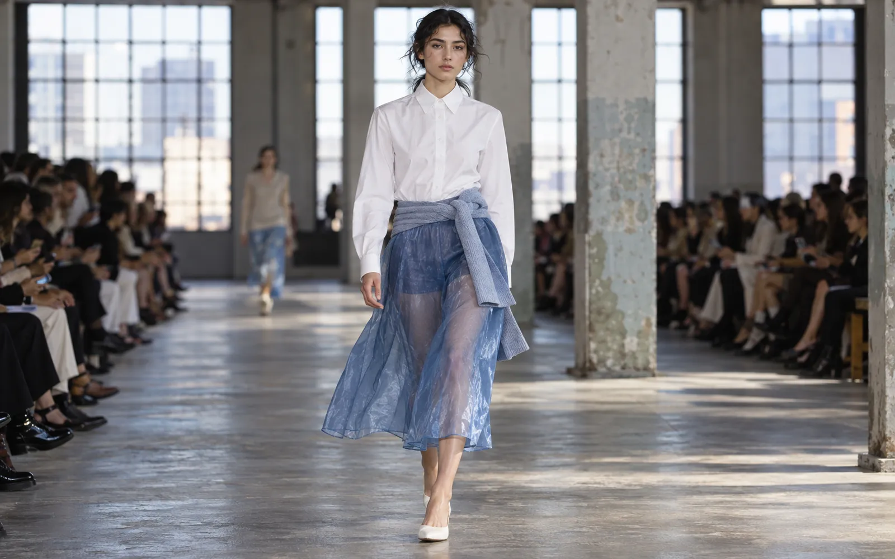
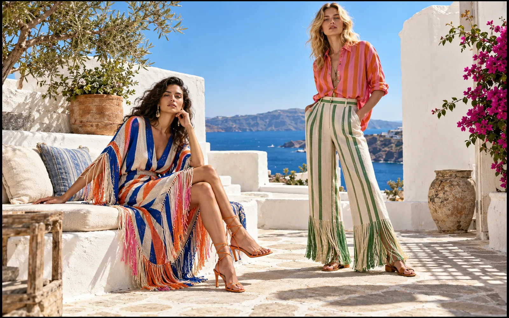
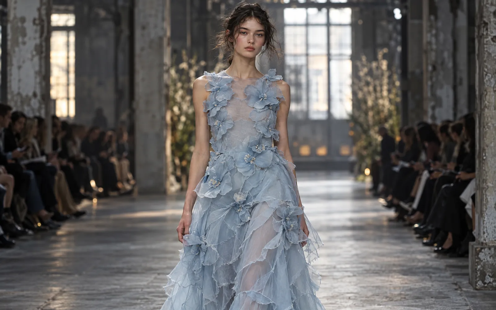

Regions
One global forecast, read for six regions. Forecut tracks the international seasons (Spring/Summer, Pre-Fall, Autumn/Winter and Resort) and shows how each trend lands in Asia, Europe, North America, South America, Africa and Oceania, with local timing, climate and market preferences.
Global forecast · Updated 13 Nov 2026

Pick a region for its season-by-season direction, key markets, climate and fashion weeks.

The world's largest and fastest-moving fashion market: Chinese and Korean labels setting their own directions, Japan's craft-led design, India's occasion economy and the Gulf's modest-luxury buyers.
China · Japan & South Korea · India · Southeast Asia · Middle East (GCC)
Home of the Paris, Milan and London calendars and the luxury houses whose shows set the global agenda, plus Scandinavia's commercial, sustainability-minded labels.
France, Italy & UK · Nordics · Southern Europe
The world's biggest single apparel market: New York's commercial runway, a huge denim, activewear and sneaker culture, and Mexico's rising design scene.
United States · Canada · Mexico
A southern-hemisphere market led by Brazil: colour, swim and beachwear, a large cotton and denim industry, and designers rooted in local culture.
Brazil · Argentina & Chile · Colombia & AndeanA young, fast-growing fashion continent: Lagos and Johannesburg as design capitals, bold prints and colour, and craft-led, circular production.
Nigeria & West Africa · South Africa · North Africa · East Africa
Australia and New Zealand: relaxed, outdoor and coastal style, a strong local designer scene, and a calendar that runs opposite to Europe and North America.
Australia · New ZealandThe newest fashion-week, collection and market news across all six regions, with links to the original coverage. Open a region for its full news list.
The Cabinet Office of Japan staged an invitation-only craft exhibition, 'Mastery of Touch, Mystery of Time', at the Kyoto State Guest House on 7–8 November (reported 13 November): about 40 works across lacquer, metalwork, ceramics, textiles and swords, with live demonstrations of Iga kumihimo braiding for obijime cords and fusai-zome gradation dyeing. Producer Junko Koshino closed with a Rimpa-themed fashion show combining kimono, Nishijin weaving and indigo dyeing with contemporary design.
Source: PR Newswire
One year after his appointment, Antonin Tron previewed his debut Balmain menswear (published 10 November), presented as the Pre-Spring/Resort 2027 men's lookbook with a campaign shot by Matthias Vriens. Inspired by California counterculture and 1970s surf culture, it has sharply tailored and double-breasted suits, velvet dinner jackets, gilded blazers, a double-breasted pony-hair coat, embroidered leather jackets, side-laced and heavy canvas trousers, leopard-print silk shirts and faded, riveted denim, with jacquard and fil coupé carried over from womenswear. It will sell in 18 of Balmain's 44 boutiques and at Saks, Neiman Marcus, Net-a-Porter and Mytheresa.
Source: Style Rave, The Impression
Rag & Bone's 20-look Pre-Fall 2027 collection (published 9 November) takes its cue from the wardrobes of women in Manhattan's Meatpacking District: fluid dresses, bias-cut silhouettes, coordinated separates, silk utility-inspired ensembles and printed organza, in relaxed proportions meant to move from day to evening.
Source: The Impression
The Bogotá Chamber of Commerce's third Bogotá Fashion Weekend runs 20–22 November with free entry: 715 brands (double 2025) across 12 commercial zones, plus a 38-brand design market at Villa Adelaida. For the opening show 27 Colombian designers, including Silvia Tcherassi, Johanna Ortiz, Pepa Pombo, Kika Vargas and Hernán Zajar, reworked existing garments into new pieces, sold to fund recovery from the 10 August earthquake in Valle del Cauca, Chocó and the Eje Cafetero.
Source: Publimetro Colombia
At Afreximbank's Creative Africa Nexus Weekend in Lagos (5–8 November), the 'Africa Made It' campaign launched on 6 November, arguing for turning African cotton into locally made garments; cited research says the continent exports up to 98% of its raw cotton and captures about 2% of its value. In Johannesburg, Miss South Africa named House of Nala, Gavin Rajah, Craig Port, Orapeleng Modutle, Scalo by Sello Medupe, David Tlale and AFI Fastrack to dress the top 12 in swimwear and evening gowns for the 14 November finale at Sandton Convention Centre.
Source: AllAfrica / Bird Story Agency, The Citizen
Auckland-born menswear label I Love Ugly opened a Sydney flagship on 7 November after Melbourne on 31 October, and denim brand ROLLA'S opened its first Sydney flagship on Hall Street, Bondi. The Upside released 'Le Ski', puffers, ski jackets and knitwear in chocolate, black and neutrals with red and animal print; Scanlan Theodore's summer chapter centres on a green called Jungle in silk, print and linen tailoring; MESHKI's Holiday 26 'The Invitation' is slip dresses and partywear.
Shinsegae is opening Hyperground pop-up stores in Taipei and Kuala Lumpur, its first entry into both markets after earlier pop-ups at Hudson Yards and Shibuya. The Taipei pop-up runs about four months to February in the Breeze Center luxury hall, rotating six Korean women's contemporary brands starting with Recto, Marie Claire and Insilence; the Kuala Lumpur pop-up at Seibu TRX runs to March with more than 10 brands, mostly K-beauty, plus Marie Claire and Tansanmagnesium fashion (reported 9 November).
Source: Seoul Economic Daily
Loewe's Christmas capsule with Tim Burton, inspired by the 1993 film, launches 12 November across bags, ready-to-wear, small leather goods, fragrance and candles, using leather marquetry, embroidery, printing and enamelling, with limited Flamenco, Puzzle and Amazona 180 bags. Veja and Marimekko release a limited capsule the same day: the Salar trainer for adults and the Small Canary for children in Marimekko's archive 'Popkorni' floral by Antti Kekki.
Source: FashionUnited: Loewe x Tim Burton, FashionUnited: Veja x Marimekko
Forecut keeps the industry-standard season names. Southern-hemisphere and tropical markets sell the same trends on their own timing.
| Season | Shown | In stores (northern hemisphere) | Southern hemisphere | Tropical & seasonless markets |
|---|---|---|---|---|
| Spring/SummerSS | Sep–Oct (year before) | Feb–Jul | Same trends sold Sep–Feb, a season later, in local spring/summer | Core of the year: lightweight trends sell 9–12 months |
| Pre-FallPF | Dec–Jan | May–Jul | Sold as local transitional season (Nov–Jan) | Transitional layers, light outerwear for air-conditioned interiors |
| Autumn/Winter (AW / FW)AW | Feb–Mar | Aug–Jan | Same trends sold Mar–Aug, in local autumn/winter | Festive and occasion wear; lighter-weight versions of AW trends |
| Resort / CruiseRS | May–Jun | Nov–Jan (holiday, travel) | Lands in local summer: the peak season for resort | Holiday, wedding and travel wardrobes |
Local in-store windows for the next seasons.
| Region | SS27 in stores | AW27 in stores | Resort 27 |
|---|---|---|---|
| Asia | Feb – Jul 2027 | Aug 2027 – Jan 2028 | Nov 2026 – Jan 2027 |
| Europe | Feb – Jul 2027 | Aug 2027 – Jan 2028 | Nov 2026 – Jan 2027 |
| North America | Feb – Jul 2027 | Aug 2027 – Jan 2028 | Nov 2026 – Jan 2027 |
| South America | Sep 2027 – Feb 2028 (local spring/summer) | Mar – Aug 2028 (local autumn/winter) | Nov 2026 – Jan 2027 (local summer: peak resort season) |
| Africa | North & West Africa: Feb – Jul 2027 · South Africa: Sep 2027 – Feb 2028 (local spring/summer) | North & West Africa: Aug 2027 – Jan 2028 · South Africa: Mar – Aug 2028 (local autumn/winter) | North & West Africa: Nov 2026 – Jan 2027 · South Africa: Nov 2026 – Jan 2027 (local summer: peak resort season) |
| Oceania | Sep 2027 – Feb 2028 (local spring/summer) | Mar – Aug 2028 (local autumn/winter) | Nov 2026 – Jan 2027 (local summer: peak resort season) |
The trends every region starts from. Open the full SS27 forecast →
Peplums, basque waists and bubble hems bring shape back after years of oversizing.
Lace, embroidery and smocking move onto crisp everyday shirting.
Exposed straps, unfinished hems and muslin-like cottons.
Fringe and bold stripes that move with every step.
The tie returns, tucked shirts look sharp again and refined flats replace sneakers.
Cut-offs, wax-coated finishes and denim suits.
The two "in-between" collections that keep stores fresh between the main seasons.